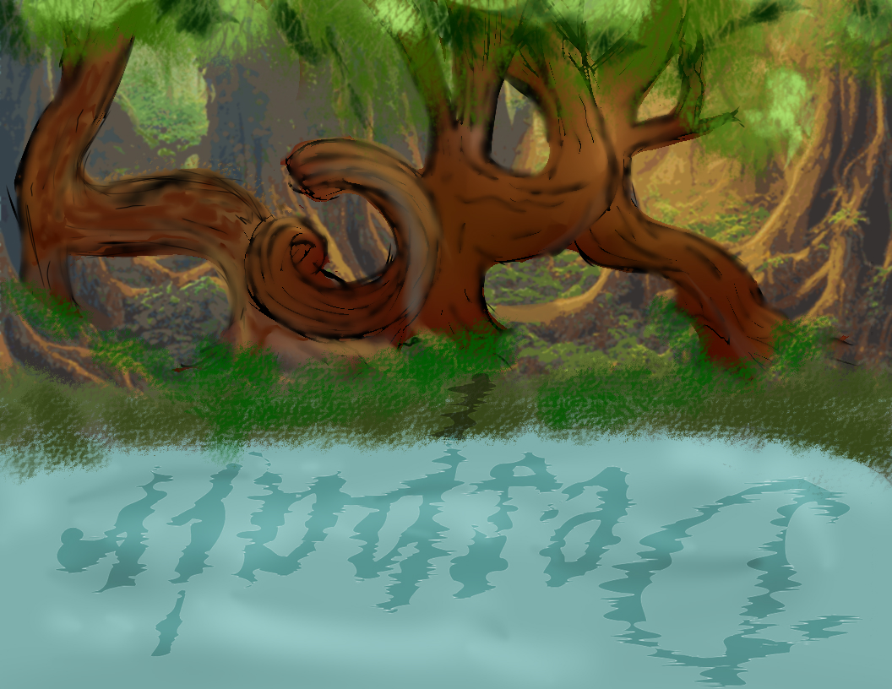

Introduction
Heya! Name's Cheyenne, I'm a general Comp Sci major in what I hope is my final year and a half of college. I like to draw, hike, sing, and read. My favorite color is blue, though if I had to choose any other color it would probably be green. I'm extremely shy and have social anxiety which tends to make me a very awkward human being. I've learned to like my weirdness, though. Here is something I designed for my Graphic Design Class:
Something else about little ole me....
Well, I'm older than I look, but I do usually like to make people guess just how old I actually am. Who knows how long I'll be able to actually do that, right? It's like my own little chance to play Loki or Rumpelstiltskin, the only difference being I have no cool magical powers to give you a reward if you guess right. Before you say money, I'm broke enough as is.
If I'm being honest, I have a tendency to be a bit of a smart-ass when you get to know me, but I'm extremely shy. It doesn't always seem like it, it's like there's this switch in my brain for my anxiety and either it causes me to ramble to no end (I will get pretty close to telling you my life story on those days, but you'll also hear me apologize more than a few times. Apologizing for my existance is what I'm good at, what can I say?), or other days I will hardly even make eye contact out of fear people will think I'm staring too much.
All this to say, I am a fairly awkward person at the core of it all. But I'm trying my best.
Another fun fact you - the reader - may have already noticed: I have a memory that is only slightly better than that of a goldfish. I will admit I have forgotten my own age once, but it was only like a "am I really turning this age?!" kind of moment. Which could happen to you too if you're older than you look and have a horrible memory like mine.
Some of my siblings (of which I have 6 total. 5 sisters, 1 brother, not all from the same parents and that well, that is a whole other story in itself that we aren't gonna delve into today) and I like to joke that I might actually be a vampire. This is also because of my pale skin, the fact that I have 2 sets of k-9 teeth, and because I tend to be more of a night owl.
Assignments
Portfolio
Have to take the time to find my old html projects. As of now: Under Construction
And here's a writing snippet instead!
Contact Information
Personal email: cheyennekirby96@gmail.com
University email: cmk7@usca.edu
Schedule
| Monday | Tuesday | Wednesday | Thursday | Friday | Saturday | Sunday | |
| 9:00 - 10:00 | Ceramics
Classroom 140 Andrew Cho |
Intermediate
Graphic Design Michael Fowler |
Ceramics
Classroom 140 Andrew Cho |
Intermediate
Graphic Design Michael Fowler |
CÍ©lÍŸÌ͇ͬ͂ͪ͗ÌÍą̲̒ͬ͋ͥ̄̓̋͜ÍÍŒÍ‚Ì Ì”Ì“ÍÌ§ÌŸÍ«Í Ì¸Í”Ì„ÌÍ‹Ì̡ͣͯ̂̅ͨ̚̕͜s̬̻ͨ̀Ì̶̢͔̇ͫs_̤̩͛̔̋̀̋iÌ̵̢̢Ì͔̗̱̟͖͚̘̊̓̔̄͡f̶̷̢̪̖͖̆̃͆͟ÌÌ¡Ì̼͚ͧͫ͊Ì̦Í̵̅̿ÍÍ‚Í¡ÍÌ̴̬̀͒̇̕Í̯̀i̬̟̩͟͜ÍÍ…Í’Ì ÌŠÌ¯ÍœÌ¾Ì¨Ì‹Í£ÌŠÌŠÌ™Ìe͉ͮͫ̈͟ÌÌ̶̥̤̾_̱̈ÌÍ—Í£Ì±Ì–Ì¢Ì ÌœÌÌŠÌ¥ÌÌ̶ͨÍ̦dͥ͂͋ͯ͗͗̌Í̸̶͚_Ì̷̟ͫͧ͒ | CÍ©lÍŸÌ͇ͬ͂ͪ͗ÌÍą̲̒ͬ͋ͥ̄̓̋͜ÍÍŒÍ‚Ì Ì”Ì“ÍÌ§ÌŸÍ«Í Ì¸Í”Ì„ÌÍ‹Ì̡ͣͯ̂̅ͨ̚̕͜s̬̻ͨ̀Ì̶̢͔̇ͫs_̤̩͛̔̋̀̋iÌ̵̢̢Ì͔̗̱̟͖͚̘̊̓̔̄͡f̶̷̢̪̖͖̆̃͆͟ÌÌ¡Ì̼͚ͧͫ͊Ì̦Í̵̅̿ÍÍ‚Í¡ÍÌ̴̬̀͒̇̕Í̯̀i̬̟̩͟͜ÍÍ…Í’Ì ÌŠÌ¯ÍœÌ¾Ì¨Ì‹Í£ÌŠÌŠÌ™Ìe͉ͮͫ̈͟ÌÌ̶̥̤̾_̱̈ÌÍ—Í£Ì±Ì–Ì¢Ì ÌœÌÌŠÌ¥ÌÌ̶ͨÍ̦dͥ͂͋ͯ͗͗̌Í̸̶͚_Ì̷̟ͫͧ͒ | CÍ©lÍŸÌ͇ͬ͂ͪ͗ÌÍą̲̒ͬ͋ͥ̄̓̋͜ÍÍŒÍ‚Ì Ì”Ì“ÍÌ§ÌŸÍ«Í Ì¸Í”Ì„ÌÍ‹Ì̡ͣͯ̂̅ͨ̚̕͜s̬̻ͨ̀Ì̶̢͔̇ͫs_̤̩͛̔̋̀̋iÌ̵̢̢Ì͔̗̱̟͖͚̘̊̓̔̄͡f̶̷̢̪̖͖̆̃͆͟ÌÌ¡Ì̼͚ͧͫ͊Ì̦Í̵̅̿ÍÍ‚Í¡ÍÌ̴̬̀͒̇̕Í̯̀i̬̟̩͟͜ÍÍ…Í’Ì ÌŠÌ¯ÍœÌ¾Ì¨Ì‹Í£ÌŠÌŠÌ™Ìe͉ͮͫ̈͟ÌÌ̶̥̤̾_̱̈ÌÍ—Í£Ì±Ì–Ì¢Ì ÌœÌÌŠÌ¥ÌÌ̶ͨÍ̦dͥ͂͋ͯ͗͗̌Í̸̶͚_Ì̷̟ͫͧ͒ |
| 10:00 - 11:00 | |||||||
| 11:00 - 12:00 | |||||||
| Bruh so Classified |
You don't have the clearance for this information |
If I told you.... well, you know. |
This is not the developer you are looking for. |
||||
| 12:00 - 1:00 | Redacted | Redacted | |||||
| 1:00 - 2:00 | |||||||
| Redacted | Redacted | ||||||
| 2:00 - 3:00 | |||||||
| 3:00 - 4:00 | |||||||
| 4:00 - 5:00 | Work | Work | Work | Work | Work | ||
|
Mobile Appllication Dev
Classroom 215 Rao Li |
Mobile Appllication Dev
Classroom 215 Rao Li |
||||||
| 5:00 - 6:00 | |||||||
| 𐌂𐌋𐌀𐌔𐌔𐌉𐌅𐌉𐌄𐌃 | 𐌂𐌋𐌀𐌔𐌔𐌉𐌅𐌉𐌄𐌃 | ||||||
| 6:00 - 7:00 |
Late
Night
Thoughts
Alright, I'm just making this as kind of a small aside that I may not even keep up with. But, for the moment at least, my brain can sometimes get so noisy it can be hard for me to articulate how I'm feeling, or properly show people who I am.
So, what better place to try to get my thoughts out coherently than right here in the 'late night thoughts'
section of code I just added to my webpage?
Alright, that should be good for now. Sleep well my lovelies 
Not really a Late Night and less thoughts, more a dull twitch in my fingers, a tenseness in my shoulders:
the need to put feelings into words so they don't swallow me whole.
The absolute desperation to put meaning to the weight on my chest before is has the chance to suffocate me.
or drive me even more insane than I already am.
If that's even possible.
I get really worried that anything I do or say may come across the wrong way. Honestly, I frequently have
"why am I like this???" moments.Even now, as I'm typing my anxiety sits on my shoulder.
A very much unwanted guest.
So, in the spirit of trying not to be so down (and because the song got stuck in my head (AND I want to
practice adding audio to my website.)) here is U from Belle:
You know what I think is funny? I get up to work, get home in enough time to do this homework
for my Mobile App Dev Midterm that ABSOLUTELY has to and will get done.
before it is due, mind you.
...but rather than working on that I'm pouting in bed because I'm punishing myself for not
doing it yet by not reading more of one of my current obsessions - Fairytale by Stephen King
A book I felt was so amazing I had to put it down after getting halfway through because I knew I wasn't ready for the world that King had prepared for his readers in this new(ish) fantasy story that brings together the wonder of.....well.....Wonderland, the eerie horror of H.P. Lovecraft, aaaaaaand has a mysterious city that is both famous and infamous that you have to take a certain stone-like road to get to. I'll leave you to speculate what pop-culture that might relate to. I'm going to be getting back to that beautiful book soon. But first, midterm project.
Anyways, all this to say rather than doing any of that, I'm up super late ranting on my homework in a small pop-up
that I don't really expect people to read (will find a funny little meme of how awkward I feel when I actually have time and am more awake).
And I just find it funny because people call me smart for knowing how to make this all look pretty.
Inserting funny video here to release Late Night anxieties:
Sleep well my Lovelies
No longer a late night, and with no other reason simply than to have something to do other than awkwardly sit around
staring into nothingness until classtime. I was going to work on adding a comment system that actually works
so that I can get responses from anyone that might on the off chance, be reading this.
my brain said:
And the mood today iiiiiiisssss....
I made this picture so that if it's hovered over
one would be able to read it a little more easily.
Also, both because I like it and came back across it recently and because I'm avoiding homework from other classes, here is a little writing snippet just about a feeling a had a couple years back:
"You know when you're building a house of cards, and as you keep adding new levels - new cards - the more fragile the tower gets? Then you think: okay one more card, I can take one more card on this pile and I should be able to keep it all together. Keep it from collapsing until I return to this house of cards and take it all down piece by piece and put it away properly.
And then you find out you were wrong about your house taking on any more weight. Because, as that last card gets placed, you watch as it all falls apart. Everything you've been trying to hold together scattering all in pieces, and flying everywhere. And, you should laugh at it. You know you should. Anyone else would laugh at such small silly things. But you took so much damn time to hold it all so that it didn't explode and now all of it, with one thing, one small thing. Gone.
And don't things always fall apart at the wrong time? The worst time possible and then poof! all that work, all that time you took, just on the floor around you.
And you can't help but think about how fucking frustrating it feels, and how you'd hate to ask for anyone else's help cleaning up the mess because this is your mess, this was your house of cards. But at the same time, that card house got so big you haven't been able to pack any of it away yet, you haven't had the time to before new cards got added. So, you really probably should ask for help? Yeah. I feel kind of like that. "
I took my time updating things since I'm like 90% sure no one is even reading this anyways, that and I wanted to adit the writing so that the style matched the emotions that were trying to be expressed when the paragraphs had been written.
Now that things have been updated, even though my social anxiety has me overthinking every move I make (and every step I take, and let's not even get started on every bond I break so don't you be watching me). If you are interested in letting me know that you have read this far, find a way to incorperate the word "Obsequious" into your sentence the next time you see me. For those of you who may need the defnitition (no shame in it I knew the word and still needed to be reminded what it meant)- it is an adjective that means - marked by or exhibiting a fawning attentiveness.
You know what else I realized that was preatty cool?
We, as programming students, know how to temporarily remove annoying ads, or headers from a website page while we are trying to read it.
Now, for those of you who have already figured this out you are probably like "well duh."
But for the rest of you fellow nerds....Hit me up irl, it's no fun if you make it too easy.
Alright, that's all for now. Sleep well my Lovilies
It's been a minute since I was last on here. But, I needed a place to vent and say everything I feel I need to
without people who I haven't talked with in years telling me it's okay to talk to them about the fact that I
always get left behind by the people who I allow the closest to me. How in the hell am I
supposed to trust anyone who says I can cometo them and talk when everyone who has ever
said they would never leave, never be the person who does that, left. And I'm left withnothing else
to believe other than that the problem is obviously me whenever I let someone in.
Even my own mother hated me so much that the night she left my father, with tears in my eyes asking her where she was going.
Her response was that it was 'None of my damn business' where. Let me say that again for you, in case you didn't hear.
Even the woman who gave birth to me who's love in stroies is supposedly unconditional couldn't stand to be arround me.
Just let that sink in... 
It's been a hot minute since the last time I put anything into this little 'journal/blog' type thing. So, I thought, since I'm already feeling silly for forgetting
my laptop for my class today and some of the discussion brought me to github anyways, I figured I mess around with it a little bit and put in a new entry for myself.
Things have been a tad bit rough lately in terms of school, my financial aid and things with my Sister-in-law/best friend. Though I'm not so sure she thinks of me as her friend anymore.
Maybe I got too needy, that's a definite possiblity. Maybe I was too absent because I was afraid of being too needy. But all this is to say that, I took a step back
because I felt as though I was making her life worse by trying to stay in it and that's the very last thing I wanted. I hate that I don't know what I did to make her
not want to speak to me, but I can be dense a lot of the time.
All that being said, I am doing better than the last time I wrote here, though my depression is still prevalent, I''m doing my best everyday to just try not to hurt anyone else
and that includes myself. It's definitely tiring and I feel stuck a lot of the time, but I'm trying to keep moving forward with my life. I just wish it didn't feel like
I have to do it without any close friends. It feels like almost every time I let someone get really close, I'm too much or not enough and I'm worried - I'm more than sure -
that it is not only something with me, but that I'm somehow being narcissistic and not realizing it somehow. Honestly the fear of hurting people is the biggest reason I'm
thinking of becoming a hermit. Can't be left if I'm always alone. Which is for sure depressing as fuck. But, maybe it's for the better?
Anyways, I'm still alive, so that's something. Sleep well my lovilies